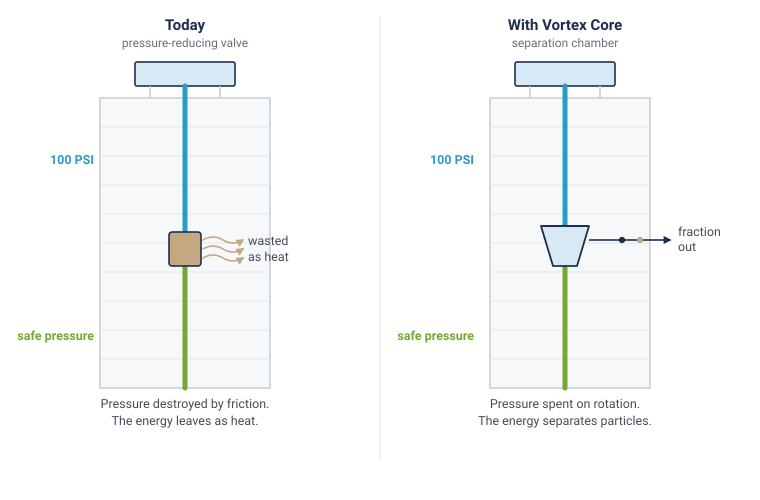

How to read this page
Everything below is design intent. No part of it has been built or measured. Figures are either calculated requirements, design targets, or stated assumptions — and each one is labelled as such. Nothing here is a test result.
1. The pressure budget
The starting point is not a new energy source. It is an existing one that is currently spent on nothing.
A twenty-storey building pumps water to a roof tank. By the time that water reaches the lower floors, the column above it has produced something in the region of 80–100 PSI at the base of the riser. Domestic fixtures and fittings are rated for a fraction of that, so a pressure-reducing valve dissipates the surplus as friction and heat. It is deliberate, universal, and it wastes a genuinely useful quantity of energy.
Vortex Core replaces that valve with a tangential inlet. The water is not allowed to lose its pressure quietly — it is injected tangentially into a conical chamber at 2–5 m/s and forced into a tight spiral. Head pressure becomes rotational velocity. The device still delivers the pressure reduction the building required; it simply takes payment for it in useful work.
Design target: 2,500–3,000 G sustained at roughly 80 PSI inlet and design flow. Whether that is reachable in a compact device is one of the questions we cannot yet answer.

2. Three stages, each using a different property
A single separator cannot resolve particles that behave in opposite ways. The concept therefore uses three stages in series, each targeting a different physical difference.
Stage 1 — heavy fraction
Water enters tangentially and forms a tight vortex. Particles denser than water — PET and PVC at 1.3–1.5 g/cm³, along with sand and sediment — are slung to the outer wall and fall through an apex valve. Design target: removal of particles above 20 µm.
Stage 2 — light fraction
The centre of a vortex is a low-pressure eye. Polymers lighter than water — polyethylene and polypropylene at 0.85–0.95 g/cm³ — migrate inward rather than outward, and can be skimmed from that core instead of being left in the product water. This is the stage with the hardest physics in it.
Stage 3 — polishing
A UV-C chamber for biological safety, and optionally a carbon block for taste and odour. This stage is conventional water treatment, included because a separator is not a disinfectant and should not be presented as one.
3. What the device would look like
A cross-section of the intended arrangement. Two things in it are easy to misread, and both matter: the flow reverses inside the chamber, and the device has two outlets rather than one.

The part that looks wrong and is not
Water appears to travel up the middle of the device. That is not a mistake in the drawing. Inside a hydrocyclone the flow descends the outer wall, reverses at the cone, and climbs the core to leave through the top. The device is a pressure vessel rather than a gravity drain, so which way the water travels is set by the pressure field inside it, not by which direction is down.
It does have a consequence worth stating plainly, because it changes how the thing would be plumbed in: the product water leaves by the top outlet, so it has to be piped back down the riser to reach the floors below. That is an additional run of pipe, and it is the reason this is not a like-for-like swap for a pressure-reducing valve.
4. Where each stream goes
The chamber produces two streams rather than one clean and one dirty. Where they go is a separate question from how the separation works, so it is drawn separately.

The concept routes both reject streams — the underflow, estimated at 5–10% of total flow, plus the smaller skimmed light fraction — through a heat exchanger fed by the building’s own waste heat: chiller returns, server room exhaust, or solar gain. The water evaporates; the plastic does not. What is condensed back is clean water, and what remains is a dry residue that can be collected in a tray and sent for recycling rather than discharged as liquid waste.
Two honest caveats. First, the energy balance of this loop has not been calculated in detail; “waste” heat is not the same as available heat, and it may not be available when the loop needs to run. Second, a system that removes particles above roughly 15 µm is a pre-treatment step, not a complete potable water treatment train, and should not be described as one.
5. The physics question, stated plainly
This is the part that decides whether the concept is viable. It is also the part most easily glossed over, so here it is in full.
The rate at which a suspended particle migrates under centrifugal force follows a form of Stokes’ law:
where d is particle diameter, ρp and ρf are the densities of particle and fluid, ac is centrifugal acceleration, and η is viscosity. Two things follow immediately: separation gets harder as the square of particle size, and harder as the density difference shrinks.
| Particle size | Polymer | Behaviour | G-force required | Within our 2,500–3,000 G design point? |
|---|---|---|---|---|
| 50 µm | PET | Denser than water | 19 G | Comfortably |
| 50 µm | Polyethylene | Buoyant | 147 G | Comfortably |
| 5 µm | PET | Denser than water | 1,931 G | Yes |
| 5 µm | Polyethylene | Buoyant | 14,679 G | No — order of magnitude short |
The gap, named
At 5 µm the required force for buoyant polymers is roughly five times our design point. Kinetic energy scales with the square of velocity, so reaching that number by spinning faster is not a small adjustment — it is a different machine, with different pressures and different wear.
There is a second risk that matters as much as the first: a single chamber tuned to eject heavy PET can concentrate light polypropylene in the stream it declares clean. Any design must demonstrate that it does not simply move a problem from one species to another. How we plan to test both →
6. Where it could go
The intended deployment is one device per riser, at or near where the pressure-reducing valve already sits.
Retrofit
In an existing building, the device occupies a plant-room position adjacent to existing pressure control. No new energy supply is required, which is the single biggest practical advantage of the concept.
New build
Designed in from the start, the pressure budget, riser layout and waste-heat access can all be arranged to suit. This is where the concept is most likely to work well.
A visible installation
The chamber is a glass-and-steel object with water visible inside it. That is an opportunity but also a commitment: a public-facing installation has to work, and has to be honest about what it is doing.
Next: what we can actually prove
The concept is not the hard part. Knowing whether it is real is. Here is what exists, what does not, and the order we intend to work in.